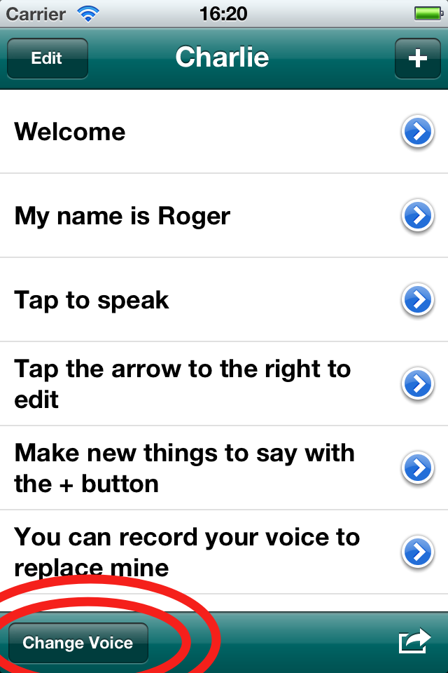
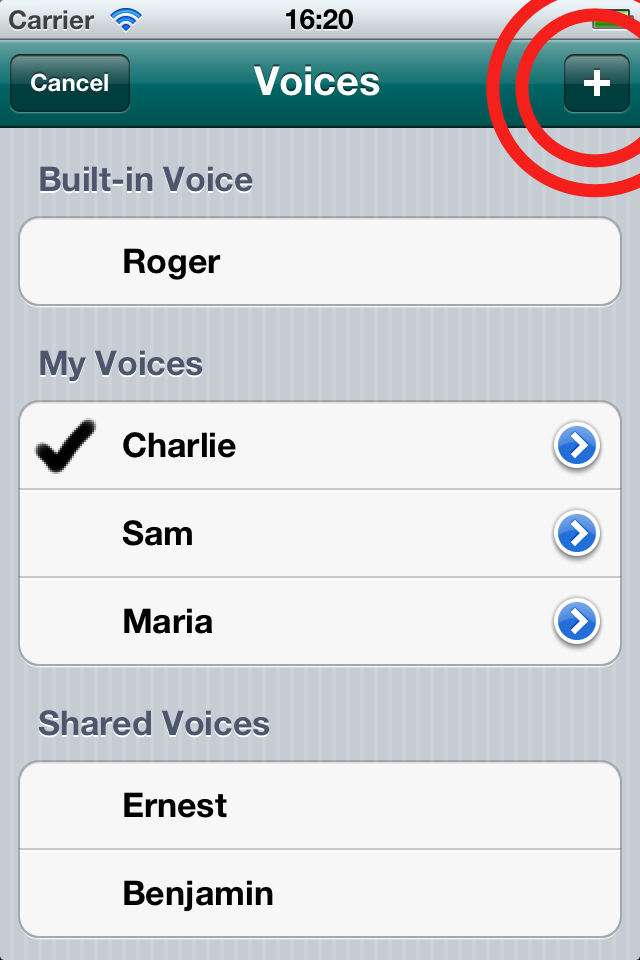
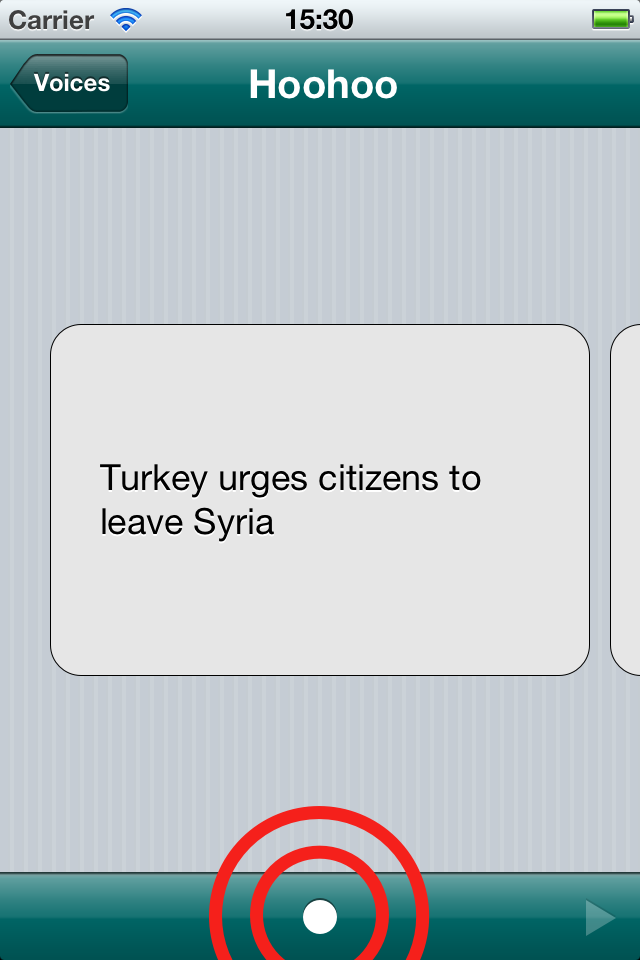

Voices starts with one voice called Roger. You can create a new voice by reading text out-loud.
From the starting screen, tap ‘Change Voice’ at the bottom.

Tap the ‘+’ at the top.

Type in your name, then tap ‘Done’.
Tap the record button at the bottom. You’ll see when recording starts.

Read aloud the text on-screen, then tap the stop button.
You can check what you just recorded with the play button.
Swipe over to the next sentence, and record again.
Try to record at least 10 sentences. You can record up to 100.
When you’ve had enough, tap the back button in the top-left. Your recordings will be uploaded for processing, which typically takes fifteen minutes. When it’s done, tap your name in the list and synthesis will use your voice.